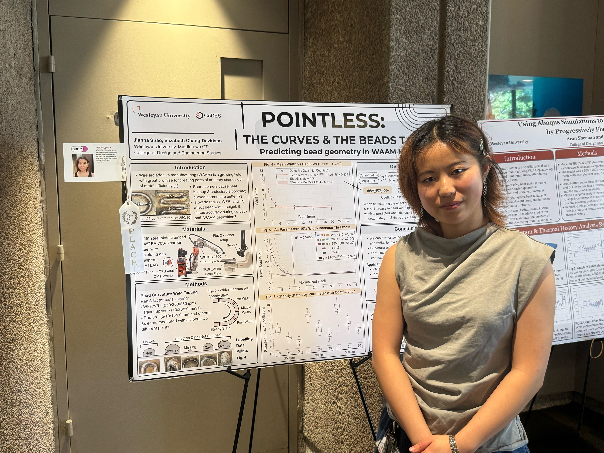
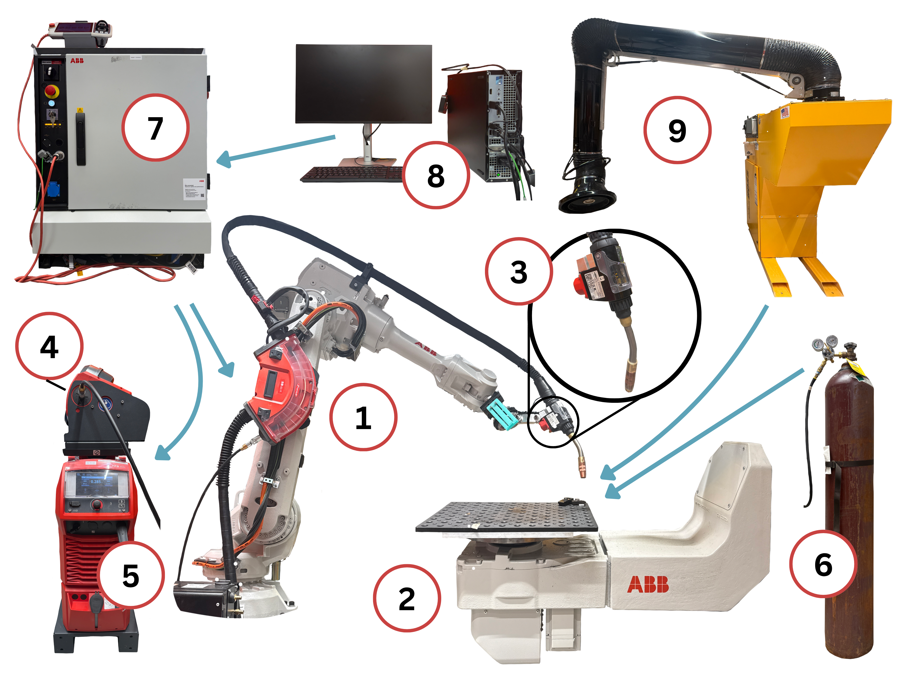
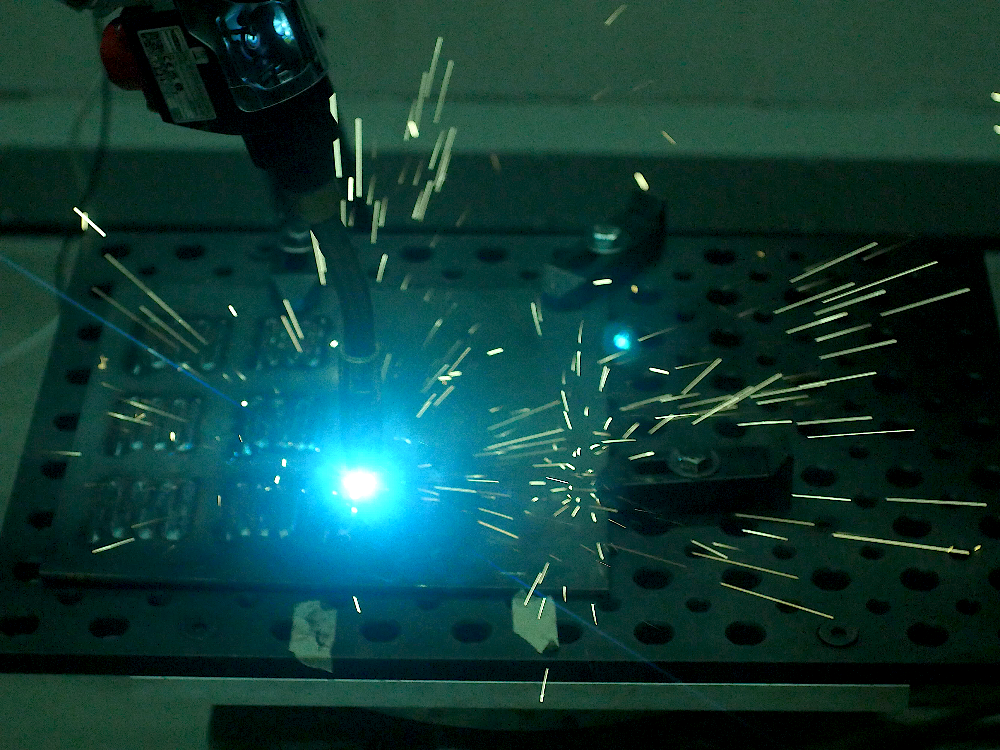
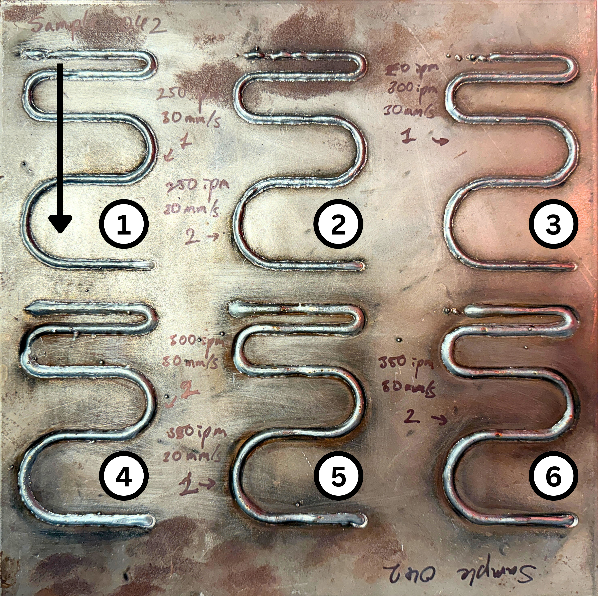
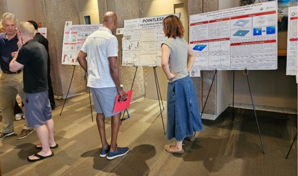

WESLEYAN UNIVERSITY · Jianna Shao · 2026
Predictive Modeling of Curvature in WAAM
Investigating how robotic toolpath curvature influences metal deposition and bead geometry in Wire Arc Additive Manufacturing (WAAM)

01 — THE QUESTION
How does the shape of a robot's path change what it produces?
My research at Wesleyan University's Chang-Davidson Lab investiages how curvature in robotic wire arc additive manufacturing affects the geometry of deposited metal.
This project explored the relationship between programmed toolpaths and physical results, examining how changes in curvature and process parameters influence the final bead; a critical manufacturing consideration when translating design into physical objects.
02 — THE EXPERIMENT
Programming the path and welding the samples.
I designed and tested curved robotic deposition paths across multiple combinations of curvature, wire feed rate, and travel speed.
The resulting deposits were measured and analyzed to understand how toolpath geometry affected bead width and height.

03 — THE PROCESS
Designed
Developed curved toolpaths with controlled geometric and process parameters in RobotStudio.
Fabricated
Produced curved metal deposits using a robotic MIG welding system and robotic arm.
Measured
Collected measurements with calipers from the deposited beads at multiple locations. Also cross-sectioned samples.
Analyzed
Used MATLAB and mathematical modeling to investigate relationships between curvature and bead geometry and graph findings.
04 — THE WORK


05 — WHAT I FOUND
Curvature matters.
The study showed that toolpath curvature can substantially influence deposited bead geometry, particularly as curvature becomes smaller relative to the characteristic bead width.
Quantitative results are complete but being prepared for publication and are not included here.
06 — SKILLS I LEARNED/IMPROVED
07 — SUMMER SCIENCE SYMPOSIUM
Sharing the Research
I presented this research at the Wesleyan University Summer Symposium where my oral presentation received third place in the Spark Prize competition.

RESEARCH & RECOGNITION
Wesleyan Research in Science 2026 Summer Fellowship
Wesleyan University · 2026
Spark Prize — 3rd Place
Wesleyan University Summer Symposium · 2026
Research Paper
Currently in preparation